C# является объектно-ориентированным языком, а значит поддерживает инкапсуляцию, наследование и полиморфизм. Класс наследуется непосредственно из одного родительского класса. Он может реализовывать любое число интерфейсов. Методы, которые переопределяют виртуальные методы родительского класса, должны содержать ключевое слово override, чтобы исключить случайное переопределение. В языке C# структура похожа на облегченный класс: это тип, распределяемый в стеке и реализующий интерфейсы, но не поддерживающий наследование. C# предоставляет record class типы и record struct , которые являются типами, целью которых в основном является хранение значений данных.
Типы, допускающие значение NULL
Классы и объекты
Классы являются самым важным типом в языке C#. Класс представляет собой структуру данных, которая объединяет в себе значения (поля) и действия (методы и другие функции-члены). Класс предоставляет определение для экземпляров класса, которые также именуются объектами. Классы поддерживают механизмы наследования и полиморфизма, которые позволяют создавать производные классы, расширяющие и уточняющие определения базовых классов.
Новые классы создаются с помощью объявлений классов. Объявление класса начинается с заголовка. Заголовок указывает:
За заголовком между разделителями { и } следует тело класса, в котором последовательно объявляются все члены класса.
Следующий код является простым примером объявления класса с именем Point:
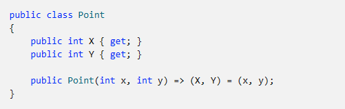
Экземпляры классов создаются с помощью оператора new, который выделяет память для нового экземпляра, вызывает конструктор для инициализации этого экземпляра и возвращает ссылку на экземпляр. Следующие инструкции создают два объекта Point и сохраняют ссылки на эти объекты в двух переменных:
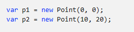
Занимаемая объектом память автоматически освобождается, когда объект становится недоступен. В C# нет ни необходимости, ни возможности освобождать память объектов явным образом.
Универсальные классы определяют параметры типа. Параметры типа — это список имен параметров типа, заключенных в угловые скобки. Параметры типа следуют за именем класса. Параметры типа можно использовать в теле класса в определениях, описывающих члены класса. В следующем примере для класса Pair заданы параметры типа TFirst и TSecond:
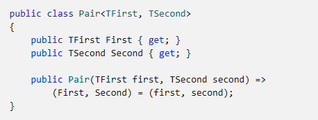
Тип класса, для которого объявлены параметры типа, называется универсальным типом класса. Типы структуры, интерфейса и делегата также могут быть универсальными. Если вы используете универсальный класс, необходимо указать аргумент типа для каждого параметра типа, вот так:
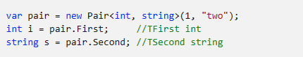
Универсальный тип, для которого указаны аргументы типа, как Pair"int,string" в примере выше, называется сконструированным типом.
В объявлении класса может быть указан базовый класс. Имя базового класса указывается после имени класса и параметров типа и отделяется от них двоеточием. Если спецификация базового класса не указана, класс наследуется от типа object. В следующем примере Point3D имеет базовый класс Point. В первом примере Point имеет базовый класс object:
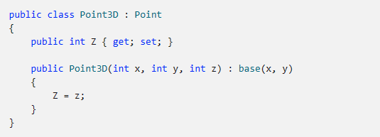
Класс наследует члены базового класса. Наследование означает, что класс неявно содержит почти все элементы базового класса. Класс не наследует экземпляры, статические конструкторы и метод завершения. Производный класс может добавлять новые члены к наследуемым, но не может удалить определение для наследуемого члена. В предыдущем примере Point3D наследует члены X и Y из Point, и каждый экземпляр Point3D содержит три свойства: X, Y и Z.
Используется неявное преобразование из типа класса к любому из типов соответствующего базового класса. Переменная типа класса может ссылаться как на экземпляр этого класса, так и на экземпляры любого производного класса. Например, если мы используем описанные выше объявления классов, то переменная типа Point может ссылаться на Point или Point3D:
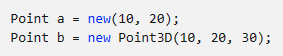
Классы определяют типы, поддерживающие наследование и полиморфизм. Они позволяют создавать сложные расширения функциональности на основе иерархий производных классов. Напротив, типы структур — это более простые типы, основной целью которых является хранение значений данных. В структурах не может быть объявлен базовый тип; они неявно наследуются от System.ValueType. От типа struct не могут быть унаследованы другие типы struct. Они неявно запечатаны.
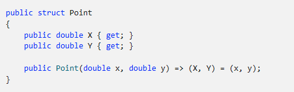
Тип Enum определяет набор значений констант. В следующем объявлении enum определяются константы, соответствующие различным корнеплодам:
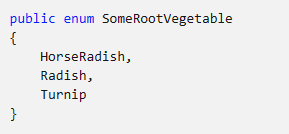
Также можно определить enum, которое будет использоваться в виде сочетания флагов. В следующем объявлении определяется набор флагов для четырех времен года. Можно применить любое сочетание времен года, в том числе значение All, включающее все времена года:
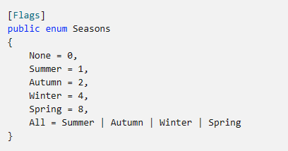
Типы, допускающие значение NULL
Переменные любого типа могут быть объявлены как не допускающий значения NULL или допускающий значение NULL. Переменная, допускающая значение NULL, может содержать дополнительное значение null, указывающее на отсутствие значения. Типы значений, допускающие значение NULL (структуры или перечисления), представляются System.Nullable"T". Ссылочные типы, не допускающие значение NULL и допускающие значение NULL, представляются базовым ссылочным типом. Различие представляется метаданными, которые считываются компилятором и некоторыми библиотеками. Если ссылки, допускающие значение NULL, разыменовываются без предварительной проверки значения на null, компилятор выдает предупреждения. Компилятор также выдает предупреждения, если ссылкам, не допускающим значение NULL, присваивается значение, которое может быть равно null. В следующем примере объявляется переменная целочисленного типа, допускающая значение NULL, и эта переменная инициализируется значением null. Затем ей присваивается значение 5. Он демонстрирует ту же концепцию со строкой, допуская значение NULL. Дополнительные сведения см. в статьях Типы значений, допускающие значение NULL и Ссылочные типы, допускающие значение NULL.
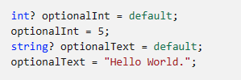
C# поддерживает кортежи, что обеспечивает краткий синтаксис для группировки нескольких элементов данных в упрощенной структуре данных. Кортежи являются альтернативой для структуры данных с несколькими элементами. Чтобы создать экземпляр кортежа, необходимо объявить типы и имена элементов между ( и ), как показано в следующем примере:
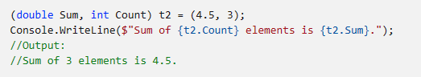